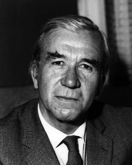

Supporting education and training in Africa
About David Anderson
 David Alexander Anderson (1920 - 1989) spent most of his adult life in Africa and became a well known and highly respected figure in many parts of the continent. He had a profound loyalty to Africa and a total commitment to the African cause. He met his wife Mary in Ghana and raised his three daughters in Africa.David Anderson served in the Administrative Service of the Gold Coast, now Ghana, and stayed in that country up to 1961, rising during that period to the highest ranks of the civil service. From the earliest days he was convinced of the urgent need to Africanise the civil service, in preparation for independence. As Secretary to the Lidbury Commission (1950-51) on the restructuring of the Civil Service in preparation for the new Constitution and independence and as a member of the Working Party on the Africanisation of the Civil Service, he helped lay the foundations for independent Ghana's Civil Service.
He was then to work closely with President Kwame Nkrumah, Ghana's first President, on the country's localisation programme, becoming Establishment Secretary and thus effectively in charge of the Civil Service from 1959 to 1961.
As Tanganyika, now mainland Tanzania, was attaining independence he moved to Dar es Salaam as Staff Development Adviser (1961 - 1964) to Mwalimu Julius Nyerere and contributed to reforms of government administration, including a new public service act, which helped to facilitate the pace of localisation of civil service staff. He was also to make a major input to a staff development programme.
David later moved to Kenya in 1964 and was Adviser on the public service to president Jomo Kenyatta, thus making his contribution towards the transition from colonial administration to the civil service of an independent country.
The experience which David gained while working directly for the first countries of Africa to attain independence made him uniquely well placed for a career in the field of development co-operation. In 1967 he joined the office of the Ford Foundation Representative in East and Southern Africa based in Nairobi and was responsible for developing a series of innovative and highly successful programmes.
While serving the government of Tanganyika, David helped initiate the annual series of Inter-African Public Administration seminars which provided a forum for senior government officials to exchange views on issues and problems facing the newly emerging independent countries. These were later institutionalised into the African Association for Public Administration and Management (AAPAM), of which David was a founding member.
David was also a creative force behind a number of national and regional Institutes of Public Administration.
In 1975, David Anderson was appointed the first EEC Delegate to Lesotho, Botswana and Swaziland giving new direction to EEC policy in Southern Africa at a time when the apartheid regime in the Republic of South Africa was still firmly in place.
As a result of his experience in Southern Africa David was a strong supporter of the local initiative which led to the establishment of the Southern African Development Co-ordination Conference (SADCC). He played an important role in the early development of SADCC and continued to maintain a close interest and involvement in the oganisation until his death. Subsequent to the democratic elections in the Republic of South Africa, SADCC was replaced by the Southern African Development Community (SADC).
David moved to Britain in 1978 as Deputy Secretary-General of the Commonwealth and Managing Director of the Commonwealth Fund for Technical Co-operation (CFTC). Under his leadership the CFTC grew in strength as an important aid to development within the Commonwealth. He retired from this post in 1983 but continued to channel his knowledge, experience and enthusiasm to the cause of African development until his death in 1989.
David Anderson was awarded the O.B.E., the Grand Medal of Ghana and the AAPAM Certificate of Honour.
The David Anderson Africa Trust was set up in 1990 by family and friends in support of human resource development in Africa.